04. คน และกะทำงาน
วัตถุประสงค์การเรียนรู้
- วาง Workplace, WorkerPool และ Broker ให้เครื่องต้องมีคนคุมด้วย Processing Importer ได้
- ทดลองจำนวนคน ความเร็วเดิน (Speed) ความเร็วทำงาน (Efficiency) และอ่าน Worker Chart ได้
- ใส่ ShiftCalendar และเปรียบเทียบผังไลน์ I กับ U ได้
- เพิ่มคนขนของ ช่างตั้งเครื่อง และช่างซ่อมที่มี Service และ Workplace ของตัวเองได้
ต่อจากบท 03: บทก่อนเครื่องทำงานเองได้ บทนี้เครื่องต้องมีคนคุม ถ้าคนไม่พอ เดินไกล หรือทำงานช้า ผลผลิตลด — 12 ขั้น จากเครื่องไม่มีคน ถึงช่างซ่อม ไลน์บทนี้มี 3 เครื่อง (Station1–3) เวลา 0:10 ต่อชิ้น ขั้น 11–12 เพิ่มช่างตั้งเครื่องและช่างซ่อมที่ทำงานคนละหน้าที่กับคนคุมเครื่อง ผลผลิตเปลี่ยนจาก 94 → 356 ชิ้น/ชม. เมื่อเพิ่มคนจาก 1 คน เป็น 3 คน (วัดจริงใน PtS 2606)
04_Workers_Shifts.spp
· Class Library › Models › Model … Model10 · ทุกตัวเลขในบทนี้วัดจาก Plant Simulation 2606 ด้วยไฟล์บทเรียนนี้
ภาพรวม: 12 ขั้น จากเครื่องไม่มีคน ถึงช่างซ่อม
| ขั้น | เรื่อง | ทำอะไร |
|---|---|---|
| 1 | รู้จัก object ของคน | Workplace, WorkerPool, Broker |
| 2 | วาง Workplace | เปิด Processing Importer |
| 3 | Broker + WorkerPool | ตั้งจำนวนคน 3 คน |
| 4 | รัน Model2 | คนยืนคุมเครื่อง ได้ 356 |
| 5 | คน 1 คน + Worker Chart | ได้ 94 คนเดิน 21% |
| 6 | Speed กับ Efficiency | เดินเร็ว ทำงานเร็ว มีผลแค่ไหน |
| 7 | ShiftCalendar | 2 กะ + เวลาพัก 1 วัน |
| 8 | คน 2 คน | ได้ 188 คนเดิน 21% |
| 9 | ไลน์ I กับ U | คน 2 คน 188 → 204 |
| 10 | Worker Transport | คนขนชิ้นงานจาก Source |
| 11 | ช่างตั้งเครื่อง | Set-up Importer ได้ 299 |
| 12 | ช่างซ่อม | Failure Importer ได้ 271 |
| – | ลองเอง | จำนวนคน ความเร็ว ระยะห่างเครื่อง |
10 Frame ในไฟล์นี้ เล่าเรื่องเดียวกัน
| Frame | ตั้งค่า | ผล (ชิ้น/ชม.) | ขั้นที่ |
|---|---|---|---|
| Model | 3 เครื่อง ไม่มีคน | 357 | 1 |
| Model2 | คน 3 คน เครื่องละคน | 356 | 2–4 |
| Model3 | คน 1 คน + Worker Chart | 94 | 5 |
| Model4 | คน 2 คน Speed 1, Eff 90/80% | 152 | 6 |
| Model5 | Model2 + ShiftCalendar 1 วัน | 5,034 (ต่อวัน) | 7 |
| Model6 | คน 2 คน ไลน์ I | 188 | 8 |
| Model7 | คน 2 คน ไลน์ U | 204 | 9 |
| Model8 | Model2 + คนขนชิ้นงาน | 255 | 10 |
| Model9 | Model2 + ช่างตั้งเครื่อง ชิ้น A/B | 299 | 11 |
| Model10 | Model2 + ช่างซ่อม เครื่องเสีย | 271 | 12 |
Duplicate ใน Class Library ของที่วางด้วยเมาส์ใน Model2 ไม่ต้องวางใหม่
(Model7 ทำจาก Duplicate Model6)ขั้นที่ 1: object ของคน อยู่ในแท็บ Resources
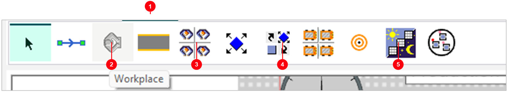
- 1แท็บ
Resourcesใน Toolbox - 2Workplace — จุดที่คนยืนทำงานข้างเครื่อง
- 3WorkerPool — ห้องพักคน กำหนดจำนวนคน
- 4Broker — รับคำขอจากเครื่อง แล้วหาคนว่างใน WorkerPool
- 5ShiftCalendar — กะทำงาน และเวลาพัก (ขั้นที่ 7)
ขั้นที่ 1: Model — 3 เครื่อง ยังไม่มีคน
- 1Station1–3 0:10 ต่อชิ้น ไม่ต้องมีคน
- 2FG = 357 ผลหลังรัน 1 ชั่วโมง
- 3Chart เขียวทุกแท่ง — ทุกเครื่อง Working ~100%
ขั้นที่ 2: วาง Workplace ใต้เครื่อง แล้วเลือก Processing Importer
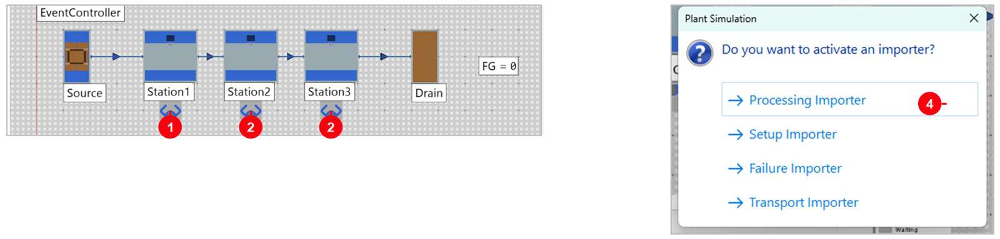
- 1Workplace ใต้ Station1 — คลิกไอคอน Workplace แล้วคลิกใต้ป้ายชื่อเครื่อง
- 2Station2 และ 3 — ทำซ้ำทีละเครื่อง Workplace ชี้เข้าหาเครื่องเอง
- 4Processing Importer — popup ขึ้นทุกครั้ง = เครื่องนี้ต้องมีคนคุมตอนผลิต
ขั้นที่ 2: สิ่งที่โปรแกรมตั้งให้
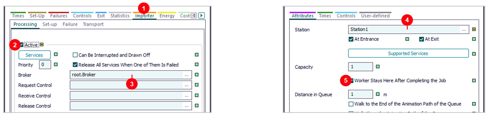
- 1แท็บ
Importer›Processing— งานผลิตต้องใช้คน - 2
Active— ช่องนี้ขึ้นเครื่องหมายถูก ☑ ให้เอง = เปิดใช้คน - 3
Broker=root.Broker— ขอคนจาก Broker ใน Frame นี้ - 4Workplace1:
Station=Station1— Workplace นี้เป็นของ Station1 - 5
Worker Stays Here After Completing the Job— คนรอที่เครื่องหลังทำเสร็จ ไม่เดินกลับ WorkerPool
ขั้นที่ 3: วาง WorkerPool และ Broker
- 1
Workers to Create— ตารางจำนวนคน (ภาพถัดไป) - 2
Travel Mode= Move freely within area = เดินอิสระ หลบสิ่งกีดขวางใน 3D - 3
Broker— WorkerPool ส่งคนผ่าน Broker ตัวนี้ - 4
Shift Calendar— ว่างไว้ก่อน (ขั้นที่ 7)
ขั้นที่ 3: ตั้งจำนวนคน และดู Broker
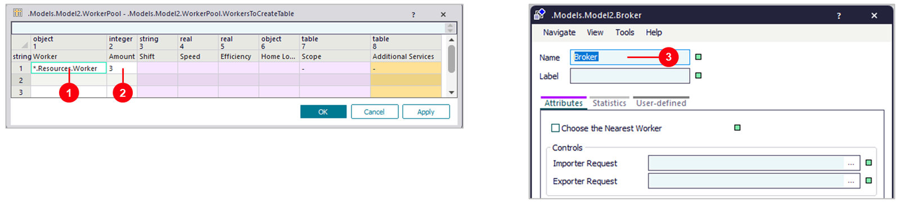
- 1
Worker=.Resources.Worker— คนแบบมาตรฐานใน Class Library - 2
Amount= 3 — 3 คน = เครื่องละคน - 3ดับเบิลคลิก
Broker— ไม่ต้องตั้งค่า ใช้ค่าเริ่มต้น · แท็บ Statistics ดูจำนวนคำขอคน
ขั้นที่ 4: รัน Model2 — คนเดินมาคุมเครื่อง
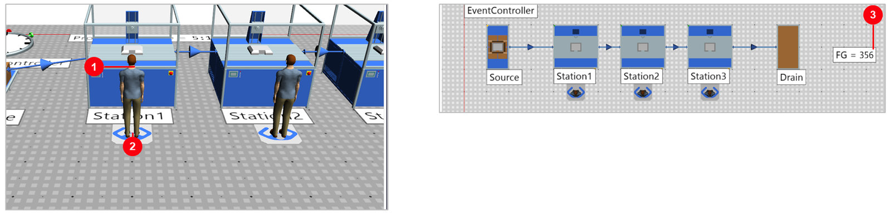
- 1คนยืนหน้าเครื่อง — หันหน้าเข้าเครื่องเพราะวาง Workplace ด้วยเมาส์ติดเครื่อง
- 2Workplace — จุดยืนของคน
- 3FG = 356 — เกือบเท่า Model (357) เพราะมีคนเครื่องละคน ยืนรอที่เครื่องตลอด
ขั้นที่ 5: Duplicate Model2 เป็น Model3 แล้วเหลือคน 1 คน
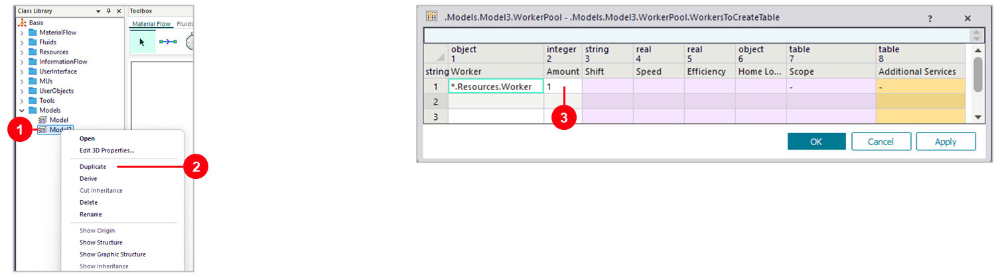
- 1คลิกขวา
Model2ใน Class Library › Models - 2
Duplicate— ได้ Frame ใหม่เหมือนเดิมทุกอย่าง ชื่อ Model22 ให้Renameเป็น Model3 - 3
Amount= 1 — ดับเบิลคลิก WorkerPool › Workers to Create แก้ 3 เป็น 1 › OK
ขั้นที่ 5: Worker Chart — ลาก WorkerPool ไปวางบน Chart
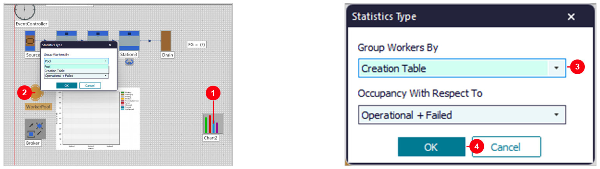
- 1
Chartจาก Toolbox › User Interface วางข้างไลน์ (ชื่อ Chart2) - 2ลาก
WorkerPoolไปปล่อยบน Chart2 — หน้าต่าง Statistics Type ขึ้นเอง - 3
Group Workers By=Creation Table— แยกแท่งตามแถวในตาราง Workers to Create - 4
OK
ขั้นที่ 5: Model3 — คน 1 คน ดูแล 3 เครื่อง
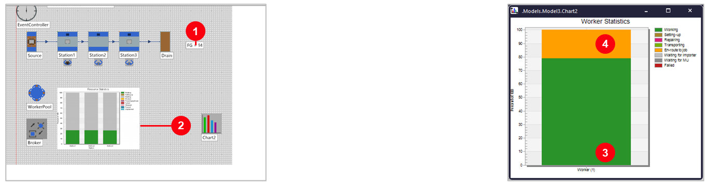
- 1FG = 94 — ไม่ถึง 119 ที่เดาไว้ (Model2 คน 3 คน ได้ 356)
- 2Chart เครื่อง: Working ~26% สีเทา = เครื่องรอคน
- 3สีเขียว = Working 78.9% คนทำงาน
- 4สีส้ม = En-route to job 21.1% คนเดินจากเครื่องหนึ่งไปอีกเครื่อง
ขั้นที่ 6: Speed กับ Efficiency คืออะไร
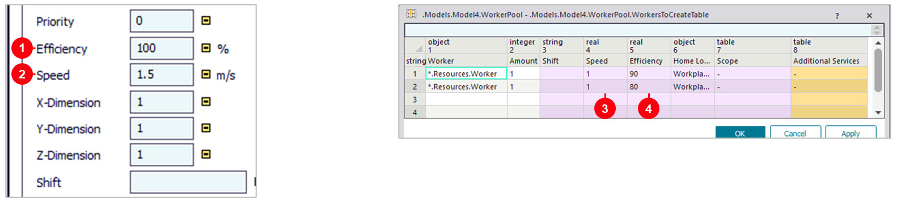
- 1
Efficiency100% — ความเร็วทำงาน 100% = ใช้เวลาเท่าเวลาเครื่อง 0:10 - 2
Speed1.5 m/s — ความเร็วเดิน ค่าเริ่มต้นของคลาส Worker - 3
Speed= 1 ใส่ในตาราง = คนแถวนั้นเดิน 1 m/s · ช่องว่าง = ใช้ 1.5 ของคลาส - 4
Efficiency= 90 / 80 — 10 วิ ÷ 0.9 = 11.1 วิ · 10 วิ ÷ 0.8 = 12.5 วิ ต่อชิ้น
.Resources.Worker เพราะทุก Frame ใช้คลาสเดียวกัน
ให้แก้ในตาราง Workers to Create ของ Frame นั้นแทนขั้นที่ 6: Model4 — คน 2 คน เดินช้าลง และทำงานช้าไม่เท่ากัน
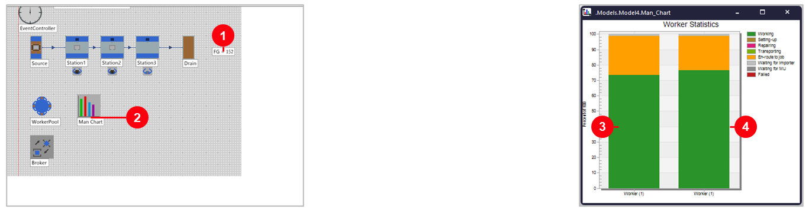
- 1FG = 152 — คน 2 คนแบบค่าเริ่มต้นได้ 188 (ขั้นที่ 8) หายไป 36 ชิ้น
- 2
Man_Chart— Worker Chart แบบขั้นที่ 5 ตาราง 2 แถว = 2 แท่ง - 3แท่งซ้าย = แถว 1 (Eff 90%) ทำงาน ~73%
- 4แท่งขวา = แถว 2 (Eff 80%) ทำงาน ~76% ทำช้าจึงใช้เวลาทำงานนานกว่า
ผลทดลอง คน 1 คน (Model3) — เปลี่ยนทีละค่า
แก้ตาราง Workers to Create ของ Model3 › Reset › รัน 1 ชม. (คนเดิน = สีส้ม En-route to job ใน Chart2)
| ลองเปลี่ยน | FG / ชม. | คนเดิน | อ่านว่า |
|---|---|---|---|
| ค่าเริ่มต้น (1.5 m/s, 100%) | 94 | 21% | ฐานของการทดลอง |
| Speed = 0.75 (ช้าลงครึ่ง) | 77 | 35% | เดินนานขึ้น เวลาทำงานเหลือน้อยลง −18% |
| Speed = 1 (ค่าใน Model4) | 85 | 29% | เดินช้ากว่าค่าเริ่มต้น |
| Speed = 3 (เร็วขึ้น 2 เท่า) | 105 | 12% | +12% แต่ไม่ถึง 120 เพราะยังต้องเดิน |
| Efficiency = 50% (ช้าครึ่ง) | 52 | 12% | ชิ้นละ 20 วิ ต่อเครื่อง ผลลดเกือบครึ่ง |
| Efficiency = 80% (แถว 2 ของ Model4) | 78 | 18% | ชิ้นละ 12.5 วิ ต่อเครื่อง |
| Efficiency = 120% (เร็วขึ้น) | 108 | 24% | ชิ้นละ 8.3 วิ ต่อเครื่อง คนเก่งกว่ามาตรฐาน |
คนพอ กับ คนไม่พอ — ค่าไหนมีผล
แก้ตาราง Workers to Create ของ Model2 (3 คน) และ Model4 (2 คน) รัน 1 ชม. · แถว 2 คนตั้งในตาราง 2 แถว แถวละ 1 คน
| คน | ลองเปลี่ยน | FG / ชม. | อ่านว่า |
|---|---|---|---|
| 3 คน | ค่าเริ่มต้น (Model2) | 356 | ฐาน: เครื่องละคน |
| 3 คน | คนที่ 3 Speed = 0.75 | 356 | คนยืนประจำเครื่อง ไม่ต้องเดิน Speed ไม่มีผล |
| 3 คน | คนที่ 3 Efficiency = 80% | 285 | เครื่องของคนนั้นช้าเป็น 12.5 วิ = คอขวด (3,600 ÷ 12.5 = 288) |
| 3 คน | ทุกคน Efficiency = 120% | 428 | ชิ้นละ 8.3 วิ เร็วกว่าเครื่องที่ไม่มีคน (357) |
| 2 คน | ค่าเริ่มต้น | 188 | เท่า Model6 (ขั้นที่ 8) |
| 2 คน | Speed = 1 ทั้งคู่ | 170 | เดินช้าลง เพราะต้องเดินไปมาระหว่างเครื่อง |
| 2 คน | Efficiency 90 / 80 อย่างเดียว | 166 | ทำงานช้าลง |
| 2 คน | Speed = 1 และ Efficiency 90 / 80 (Model4) | 151 | ผลรวมของสองอย่าง |
ขั้นที่ 7: Duplicate Model2 เป็น Model5 แล้ววาง ShiftCalendar
- 1
ShiftCalendarจาก Toolbox › Resources แล้วคลิกวางที่ว่างข้าง Chart
ขั้นที่ 7: ลาก WorkerPool และเครื่องไปวางบน ShiftCalendar
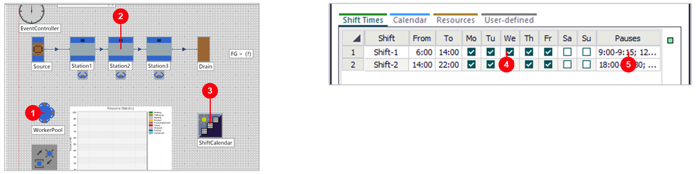
- 1ลาก
WorkerPoolไปปล่อยบน ShiftCalendar = คนทำงานตามกะ - 2ลาก
Station1–3ไปปล่อยบน ShiftCalendar ทีละเครื่อง = เครื่องหยุดนอกกะ - 3
ShiftCalendar— ปล่อยบนไอคอนเท่านั้น ถ้าปล่อยที่ว่าง object จะย้ายที่แทน - 42 กะ จันทร์–ศุกร์ 6:00–14:00 และ 14:00–22:00 (ค่าเริ่มต้น)
- 5
Pauses— พัก 9:00–9:15, 12:00–12:45 · 18:00–18:30, 20:30–21:00
ขั้นที่ 7: Model5 รัน 1 วัน — นอกกะเครื่องหยุด
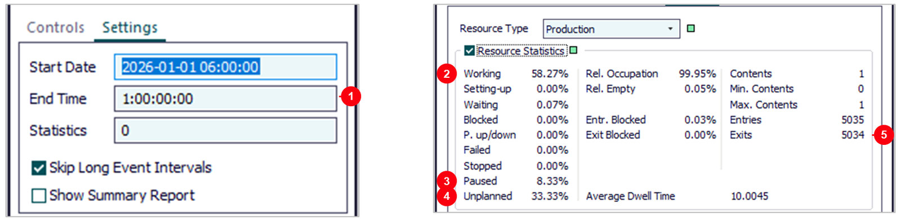
- 1
End Time=1:00:00:00— 1 วัน เริ่ม 06:00 - 2Working 58.27% — ทำงานเฉพาะในกะ
- 3Paused 8.33% — เวลาพักในกะ
- 4Unplanned 33.33% — 22:00–6:00 นอกกะ
- 5Exits 5,034 — ชิ้นต่อวัน = FG
ขั้นที่ 8: Model6 — คน 2 คน ดูแล 3 เครื่อง
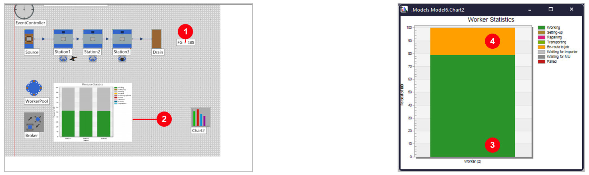
- 1FG = 188 — คน 1 คน 94 → คน 2 คน 188 (2 เท่าพอดี)
- 2Chart เครื่อง: Working ~53% สีเทา = รอคน
- 3สีเขียว = Working 78.8% คนทำงาน
- 4สีส้ม = En-route to job 21.0% คนเดินไปหาเครื่อง
ขั้นที่ 9: Model7 — จัดไลน์เป็นรูป U
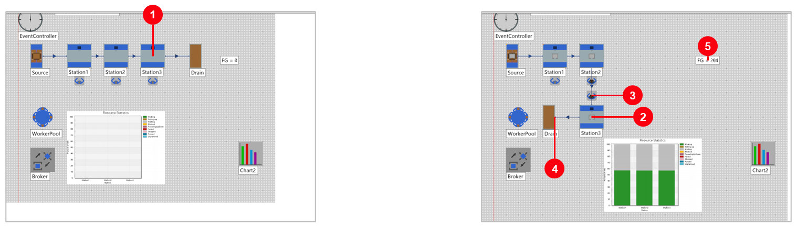
- 1ไลน์ I — Station3 อยู่ปลายไลน์ คนเดินไกล
- 2
Station3— ย้ายมาไว้ใต้ Station2 - 3
Workplace3— อยู่ด้านในตัว U ใกล้ Workplace2 - 4
Drain— ใต้ Station1 ชิ้นงานกลับมาออกฝั่งเดียวกับที่เข้า - 5FG = 204 — คนเท่าเดิม 2 คน
ขั้นที่ 9: Worker Chart ไลน์ I กับไลน์ U
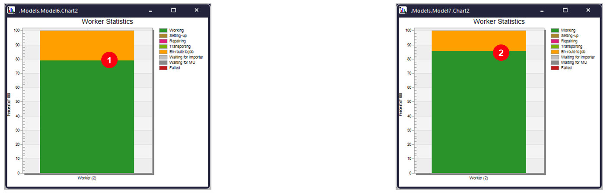
- 1ไลน์ I — เดิน 21.0% · ทำงาน 78.8% · ได้ 188 ชิ้น/ชม.
- 2ไลน์ U — เดิน 14.3% · ทำงาน 85.5% · ได้ 204 ชิ้น/ชม. (+8.5%)
ขั้นที่ 10: Worker Transport — วาง Workplace ใต้ Source
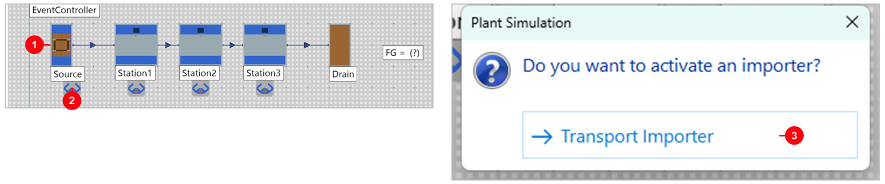
- 1
Source— จุดปล่อยชิ้นงาน - 2Workplace ใต้ Source — คลิกไอคอน Workplace แล้วคลิกใต้ป้ายชื่อ Source (ได้ชื่อ Workplace0)
- 3
Transport Importer— Source มีตัวเลือกเดียว = ต้องมีคนขนชิ้นงานไปเครื่องถัดไป
ขั้นที่ 10: คนขนชิ้นงานจาก Source ไป Station1
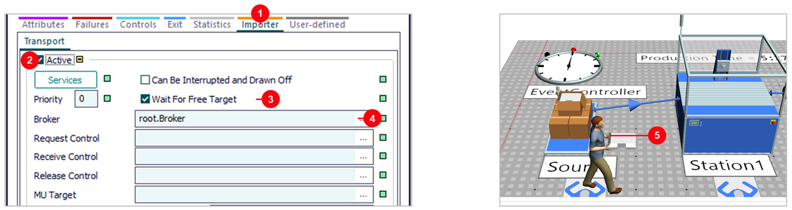
- 1แท็บ
Importer›Transport— ตั้งให้เองจาก popup - 2
Active— เปิดใช้คนขน - 3
Wait For Free Target— รอให้เครื่องถัดไปว่างก่อนเรียกคน - 4
Broker=root.Broker— ขอคนจาก Broker เดียวกับเครื่อง - 5คนยกชิ้นงาน — เดินจาก Source ไปวางที่ Station1
ขั้นที่ 10: Model8 — ผลเมื่อต้องมีคนขนของ
- 1FG = 255 — ลดจาก 356 (−28%) คนเท่าเดิม 3 คน
- 2Chart เครื่อง: Working ~71% สีเทา = รอชิ้นงานที่คนยังขนมาไม่ถึง
ขั้นที่ 11: Model9 — ชิ้นงาน 2 ชนิด A กับ B สลับกัน
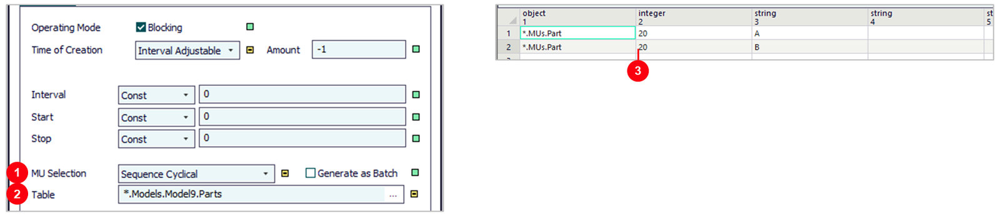
- 1
MU Selection=Sequence Cyclical— ปล่อยชิ้นงานตามตาราง วนซ้ำ - 2
Table=Parts— Toolbox › Information Flow › DataTable วางในเฟรม แล้ว Rename เป็น Parts - 3
Parts— แถว 1: Part 20 ชิ้น ชื่อ A · แถว 2: Part 20 ชิ้น ชื่อ B
ขั้นที่ 11: Set-up Time และ Set-up Importer
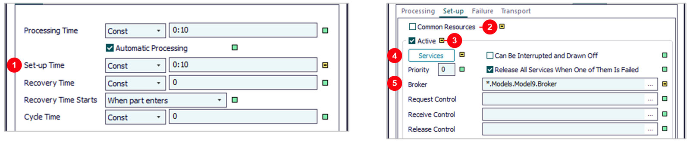
- 1
Set-up Time=0:10— ตั้งเครื่องครั้งละ 10 วินาที ทุกเครื่อง - 2
Common Resources— ไม่เลือกช่องนี้ = คนตั้งเครื่องเป็นคนละคนกับคนคุมเครื่อง - 3
Active— คลิกช่องให้ขึ้นเครื่องหมายถูก ☑ = เปิด Set-up Importer - 4
Services=SetupTech— ขอคนที่ทำงาน SetupTech ได้ - 5
Broker— Broker ของ Frame นี้
ขั้นที่ 11: คลาส Technician และช่างตั้งเครื่อง 1 คน
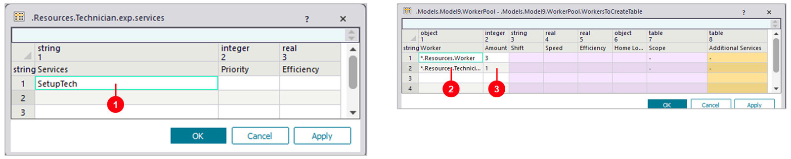
- 1
Technician— คลิกขวา Resources › Worker › Duplicate แล้ว Rename · Services เหลือแถวเดียวSetupTech - 2แถว 2 =
.Resources.Technician— ลากคลาส Technician จาก Class Library มาวางในช่อง Worker - 3
Amount= 1 — ช่าง 1 คน ดูแล 3 เครื่อง · แถว 1 คนคุมเครื่อง 3 คนเท่าเดิม
ขั้นที่ 11: Workplace ของช่าง วางเหนือเครื่อง
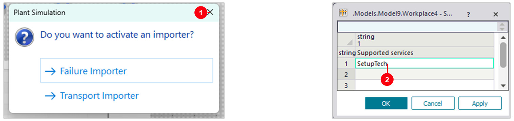
- 1ปิด popup — วาง Workplace เหนือเครื่องแล้วกด × ไม่เลือกอะไร (Set-up Importer ตั้งในเครื่องแล้ว)
- 2
Workplace4–6› Supported Services =SetupTech— ที่ยืนของช่างเท่านั้น - 3
Workplace1–3› Supported Services =Processing— ที่ยืนของคนคุมเครื่องเท่านั้น (ตั้งแบบเดียวกัน ไม่มีในภาพ)
ขั้นที่ 11: Model9 — ช่างเดินไปตั้งเครื่องทีละเครื่อง
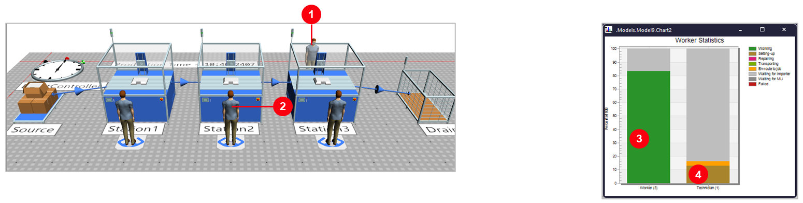
- 1Technician — ยืนที่ Workplace เหนือเครื่องที่เพิ่งตั้งเสร็จ
- 2คนคุมเครื่อง — อยู่ที่เดิมตลอด ไม่ต้องหลบให้ช่าง
- 3Worker (3) ทำงาน 83%
- 4Technician (1) ตั้งเครื่อง 12.8% เดิน 3.5% · FG = 299
ขั้นที่ 12: Model10 — เครื่องเสีย และ Failure Importer
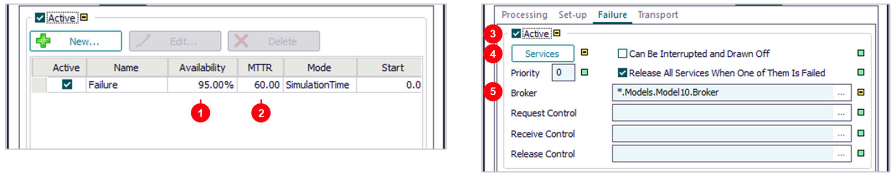
- 1
Availability= 95% — เครื่องพร้อมทำงาน 95% ของเวลา - 2
MTTR=1:00— ซ่อมเฉลี่ยครั้งละ 1 นาที (Failures › New… หรือดับเบิลคลิกแถว Failure) - 3
Active— คลิกช่องให้ขึ้นเครื่องหมายถูก ☑ = ต้องมีคนมาซ่อม - 4
Services=Repair— ขอคนที่ซ่อมได้ - 5
Broker— Broker ของ Frame นี้
ขั้นที่ 12: Workplace ของช่างซ่อม
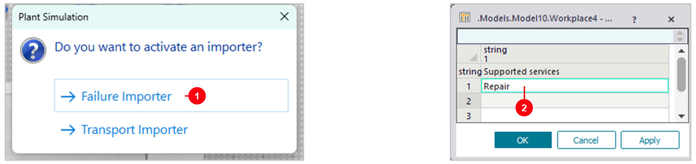
- 1
Failure Importer— วาง Workplace เหนือเครื่องแล้วเลือก Failure Importer ทำทั้ง 3 เครื่อง - 2
Workplace4–6› Supported Services =Repair— ที่ยืนของช่างซ่อม - 3
Workplace1–3› Supported Services =Processing— ที่ยืนของคนคุมเครื่อง (ตั้งแบบเดียวกัน ไม่มีในภาพ)
ขั้นที่ 12: คลาส Repairman และช่างซ่อม 1 คน
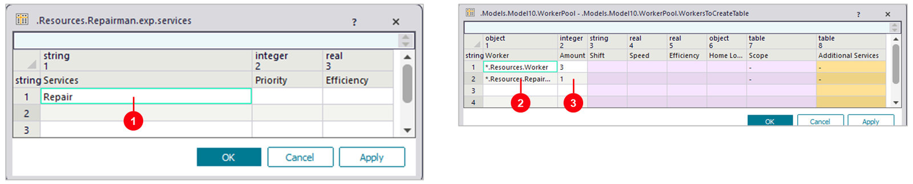
- 1
Repairman— Duplicate คลาส Worker แบบขั้นที่ 11 · Services เหลือแถวเดียวRepair - 2แถว 2 =
.Resources.Repairman— ลากคลาสมาวางในช่อง Worker - 3
Amount= 1 — ช่างซ่อม 1 คน ดูแล 3 เครื่อง
ขั้นที่ 12: Model10 — ช่างเดินไปซ่อมเครื่องที่เสีย
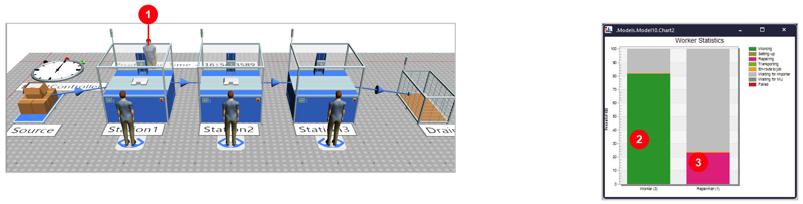
- 1Repairman — ยืนที่ Workplace เหนือเครื่องที่เพิ่งซ่อม
- 2Worker (3) ทำงาน 82% เครื่องเสียคนก็รอ
- 3Repairman (1) ซ่อม 23.1% เดิน 0.7% · FG = 271
สรุป 10 Frame (PtS 2606)
| Frame | ตั้งค่า | เวลาจำลอง | ผลผลิต | อ่านว่า |
|---|---|---|---|---|
| Model | 3 เครื่อง ไม่มีคน | 1 ชม. | 357 ชิ้น | ฐานเปรียบเทียบ |
| Model2 | คน 3 คน เครื่องละคน | 1 ชม. | 356 ชิ้น | คนพอ ไม่เสียผลผลิต |
| Model3 | คน 1 คน + Worker Chart | 1 ชม. | 94 ชิ้น | คนเดิน 21% |
| Model4 | คน 2 คน Speed 1, Efficiency 90 / 80% | 1 ชม. | 152 ชิ้น | เดินช้า + ทำช้า |
| Model5 | Model2 + ShiftCalendar 2 กะ | 1 วัน | 5,034 ชิ้น | ทำงาน 58% ของวัน |
| Model6 | คน 2 คน ไลน์ I | 1 ชม. | 188 ชิ้น | คนเดิน 21% |
| Model7 | คน 2 คน ไลน์ U | 1 ชม. | 204 ชิ้น | คนเดิน 14% |
| Model8 | Model2 + Transport Importer ที่ Source | 1 ชม. | 255 ชิ้น | คนขน + เดิน ~10% |
| Model9 | Model2 + ชิ้น A/B + ช่างตั้งเครื่อง 1 คน | 1 ชม. | 299 ชิ้น | ตั้งเครื่อง 4.4% + รอช่าง |
| Model10 | Model2 + เครื่องเสีย 95% + ช่างซ่อม 1 คน | 1 ชม. | 271 ชิ้น | เสีย + รอช่างซ่อม |
ลองเอง: เปลี่ยนจำนวนคน ความเร็ว และค่าของช่าง
| Frame | ลองเปลี่ยน | FG หลังรัน 1 ชม. | ทำไม |
|---|---|---|---|
| Model3 | Workers to Create › Amount = 2 | 188 | เหมือน Model6 |
| Model4 | ลบค่า Speed ทั้ง 2 แถว (ใช้ 1.5) | 166 | เหลือแต่ผลของ Efficiency |
| Model7 | Amount = 1 | 102 | ไลน์ U ช่วยคนเดียวได้เล็กน้อย (Model3 ได้ 94) |
| Model6 / Model7 | Amount = 3 | 356 | คนครบ ผังไม่มีผล |
| Model6 | ย้าย Station2, 3 ให้ห่างกัน 6 m | 156 | เดินไกลขึ้น ได้น้อยลง |
| Model9 | Set-up Time = 0:30 ทุกเครื่อง | 238 | ตั้งเครื่องนานขึ้น |
| Model9 | Parts ชนิดละ 40 ชิ้น | 322 | เปลี่ยนชนิดน้อยลง ตั้งเครื่องน้อยลง |
| Model10 | แถว Repairman › Amount = 2 | 290 | เกือบเท่าไม่ต้องรอช่าง (292) |
| Model10 | MTTR = 2:00 ทุกเครื่อง | 242 | ซ่อมนานขึ้น |
Reset ก่อน Start ทุกครั้ง
· Model10 เครื่องเสียแบบสุ่ม ตัวเลขอาจต่างเล็กน้อยถ้ารันนานกว่า 1 ชั่วโมงปัญหาที่พบบ่อย และวิธีแก้
| อาการ | วิธีแก้ |
|---|---|
| หยุดพร้อมข้อความ does not have a free workplace | เครื่องนั้นไม่มี Workplace ของตัวเอง วาง Workplace ติดเครื่องแล้วเลือก Processing Importer |
| วาง Workplace แล้วไม่มี popup | วางไกลเครื่องเกินไป ลบแล้ววางใหม่ใต้ป้ายชื่อเครื่อง |
| คนยืนหันหลังให้เครื่อง | Workplace ไม่ได้วางติดเครื่อง วางใหม่ด้วยเมาส์ให้ชิดเครื่อง |
| รันแล้ว FG = 0 คนไม่มา | ตรวจ Broker ของเครื่อง (แท็บ Importer) และของ WorkerPool ต้องเป็นตัวเดียวกัน |
| ใส่ Speed = 1 แล้วผลลดลง | ช่องว่าง = 1.5 m/s ของคลาส Worker · ใส่ 1 คือให้เดินช้าลง ถ้าไม่ตั้งใจให้ลบค่าออก |
| Worker Chart มีแท่งเดียว | Group Workers By = Pool ทั้งกอง · Creation Table แยกตามแถวในตาราง Workers to Create |
| ShiftCalendar ไม่มีผล | ลาก WorkerPool และเครื่องไปปล่อยบน ShiftCalendar · รันนานกว่า 1 กะ |
| วาง Workplace เหนือเครื่องแล้วไลน์ค้าง FG = 0 | เผลอเลือก Transport Importer ใน popup · Station › Importer › Transport เอาเครื่องหมายถูกที่ Active ออก |
| ช่างมาแล้วคนคุมเครื่องเดินออกไป | Workplace1–3 ยังรับทุก Service ช่างจึงไปยืนแทน · ตั้ง Supported Services = Processing |
| เปิด Failure Importer แล้วไลน์แทบหยุด (58) | Services ยังเป็น Failure คนคุมเครื่องต้องซ่อมกันเอง · ตั้ง Services = Repair และเพิ่มช่างซ่อม |
| ลาก object แล้วกลายเป็นแท่งใหม่ใน Chart | ปล่อยบน Chart = เพิ่มเข้า Chart ถ้าจะย้ายให้ปล่อยบนที่ว่าง |